A01_line_residual
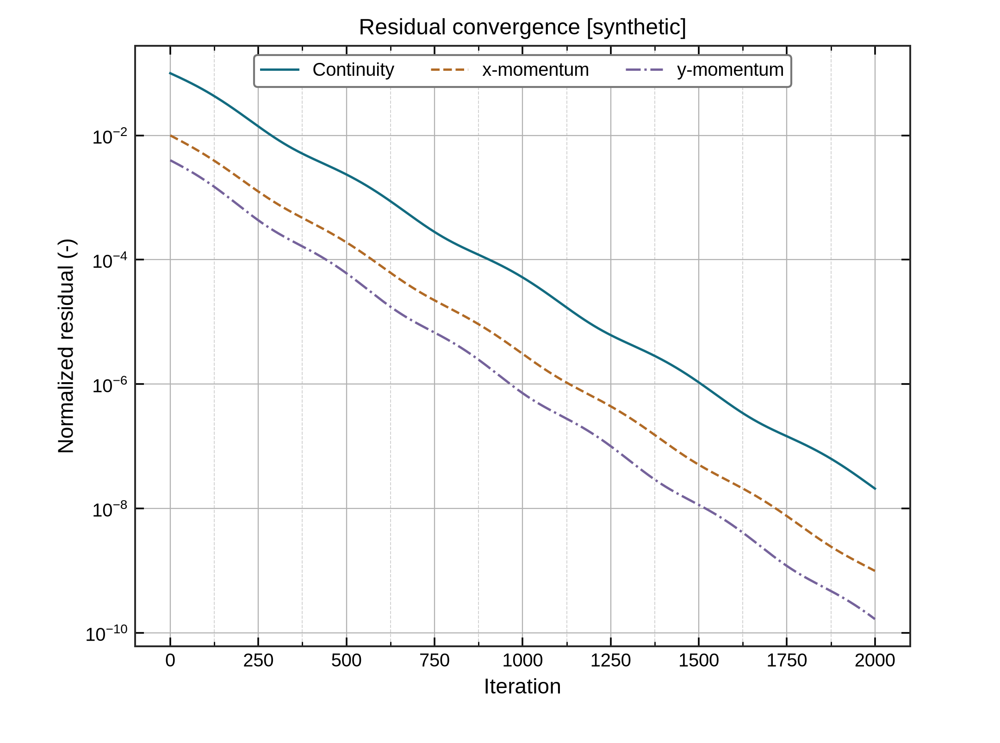
来源：人为构造的残差序列，不是求解器输出。
含义：连续性和两个动量方程的归一化残差，测试跨数量级收敛。
参数：迭代 0–2000，步长 1；R=A*10^(-n/tau)*(1+a*sin(n/b))；纵轴 log。
5 line + 5 point-line + 2 mixed + 4 simple checks. DNS 为真实公开数据；synthetic/synth. 均为人为构造，不是真实 CFD/实验。
点击图像查看原始 300 dpi PNG；完整报告 · 数据与审计记录

来源：人为构造的残差序列，不是求解器输出。
含义：连续性和两个动量方程的归一化残差，测试跨数量级收敛。
参数：迭代 0–2000，步长 1；R=A*10^(-n/tau)*(1+a*sin(n/b))；纵轴 log。
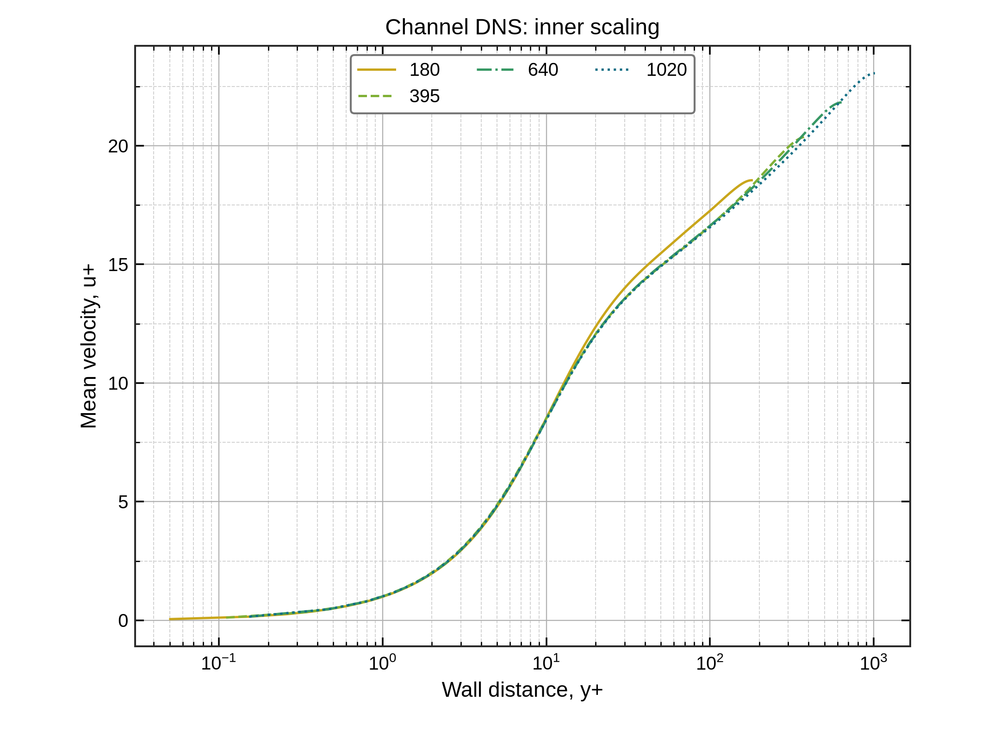
来源：Kawamura Lab：Poi180_4th_E.dat, Poi395_4th_D.dat, Poi640_4th_B.dat, Poi1020_4th_A_ver2.dat
含义：充分发展湍流平面通道流的半通道均值速度内尺度剖面。
参数：Re_tau=180/395/640/1020；原始全部测点；横轴 log，y+>0，无补壁面点。
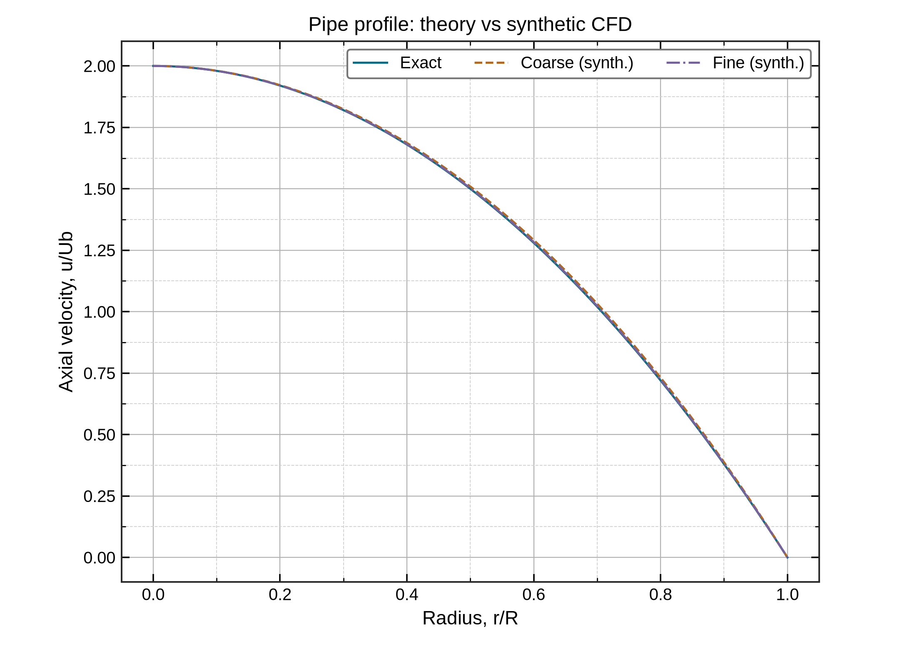
来源：Hagen–Poiseuille 解析解 + 明确构造的两组数值示意结果。
含义：不可压缩、充分发展层流圆管轴向速度；不是湍流平面通道的解析解。
参数：Re_D=1000；u/Ub=2[1-(r/R)^2]；偏差乘子 1+0.025(r/R)^2 和 1+0.00625(r/R)^2。
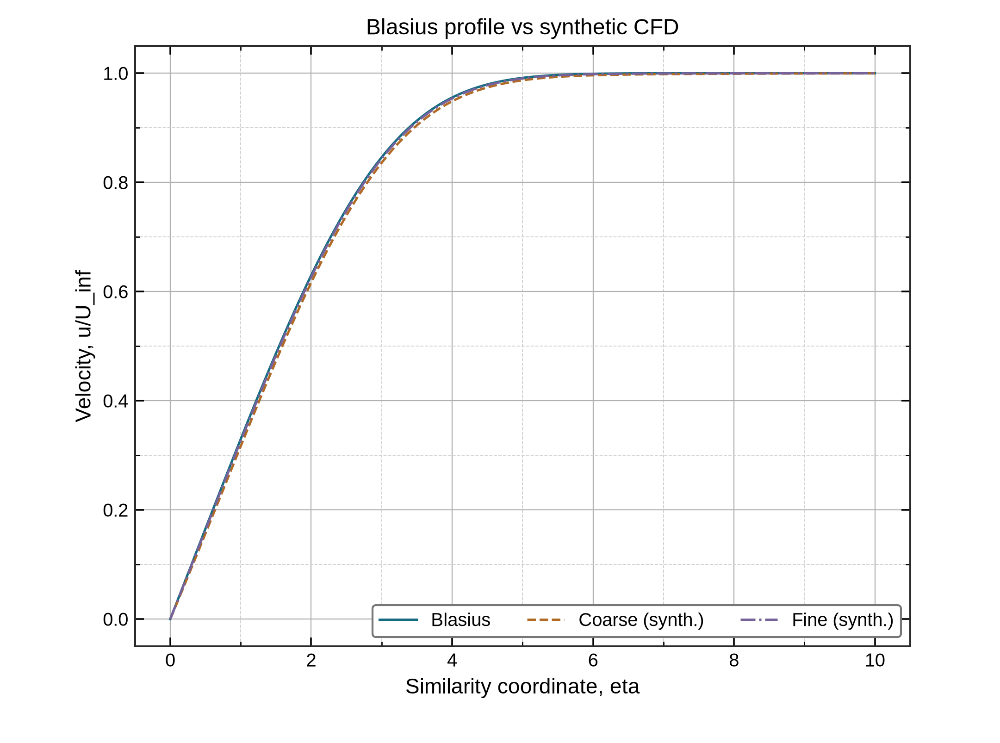
来源：Blasius 相似性方程数值求解的理论参考曲线 + 合成数值偏差。
含义：零压梯度层流平板边界层；Blasius 没有在此被冒称为闭式解析公式。
参数：f'''+0.5*f*f''=0；f(0)=f'(0)=0，f'(10)=1；RK4+二分打靶，deta=0.01；f''(0)=0.3320573372。
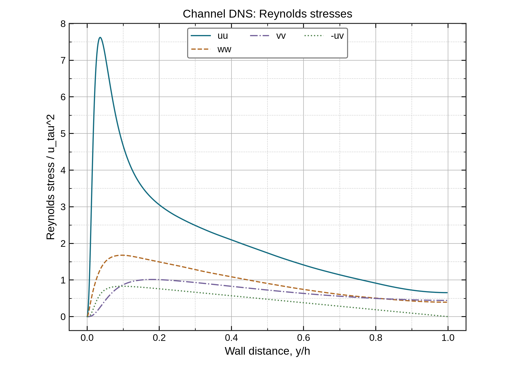
来源：Kawamura Lab：Poi395_4th_D.dat 的均值表与剪切应力表。
含义：三个法向雷诺应力及负雷诺剪切应力；不是速度 RMS。
参数：Re_tau=395；均值/uu/ww 与 vv/-uv 是交错网格，分别保留各表原始 y+；y/h=y+/Re_tau；不插值合并。
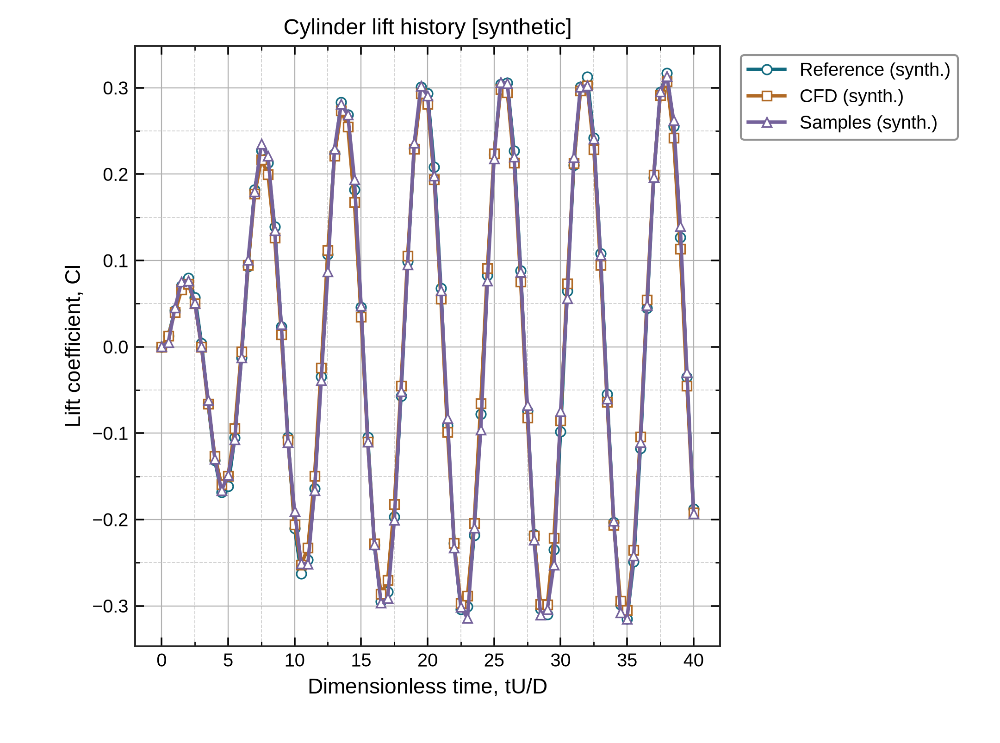
来源：合成圆柱涡脱落式时间信号；包括合成参考和合成测量点，无真实实验。
含义：启动后趋于周期振荡的升力时间历程。所有组均同时画点和连线。
参数：示意 Re_D=100；St=0.165；tU/D=0–40，dt=0.5；噪声标准差 0.007；seed=20261019。
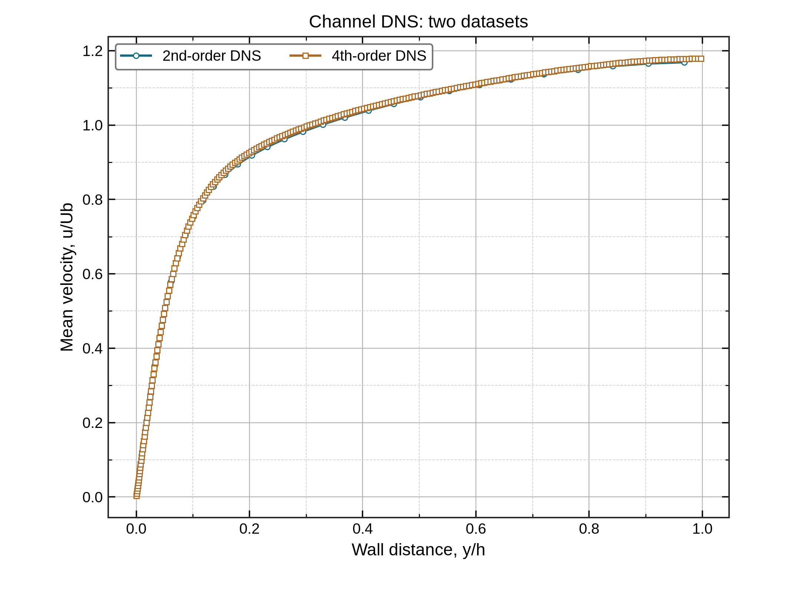
来源：Kawamura Lab：Poi180_2nd_A.dat、Poi180_4th_E.dat，均为真实 DNS。
含义：不同分辨率及离散方法数据的空间剖面对比；不能据此单独归因于离散阶数。
参数：Re_tau=180；Re_bulk=5692/5665；Ub+=Re_bulk/(2*Re_tau)；保留两套原网格，不插值对齐。
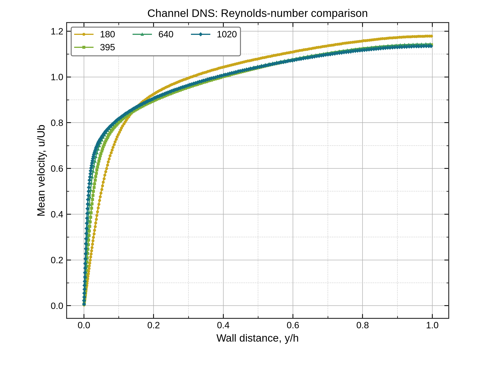
来源：Kawamura Lab：四组原始 DNS 均值剖面。
含义：不同摩擦雷诺数下的外尺度均值速度，检验有序配色和密集非均匀网格标记。
参数：Re_tau=180/395/640/1020；y/h=y+/Re_tau；u/Ub=u+/(Re_bulk/(2*Re_tau))；全部原始点。
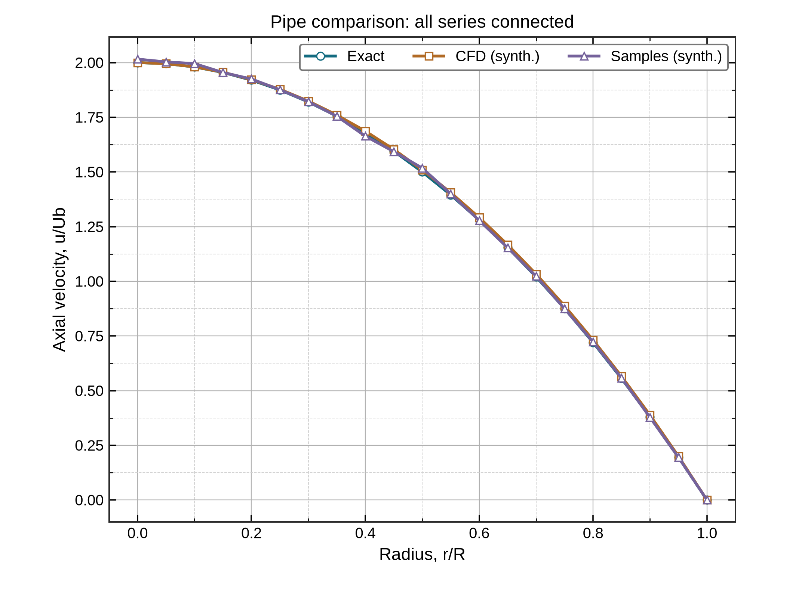
来源：Hagen–Poiseuille 解析解 + 合成 CFD 和合成测量点。
含义：同图对比理论、数值示意和测量示意；按 point-line 定义，三组都显示点和连线。
参数：Re_D=1000；21 个 r/R 位置；u/Ub=2[1-(r/R)^2]；噪声为 0.012*(1-r^2)；固定种子。
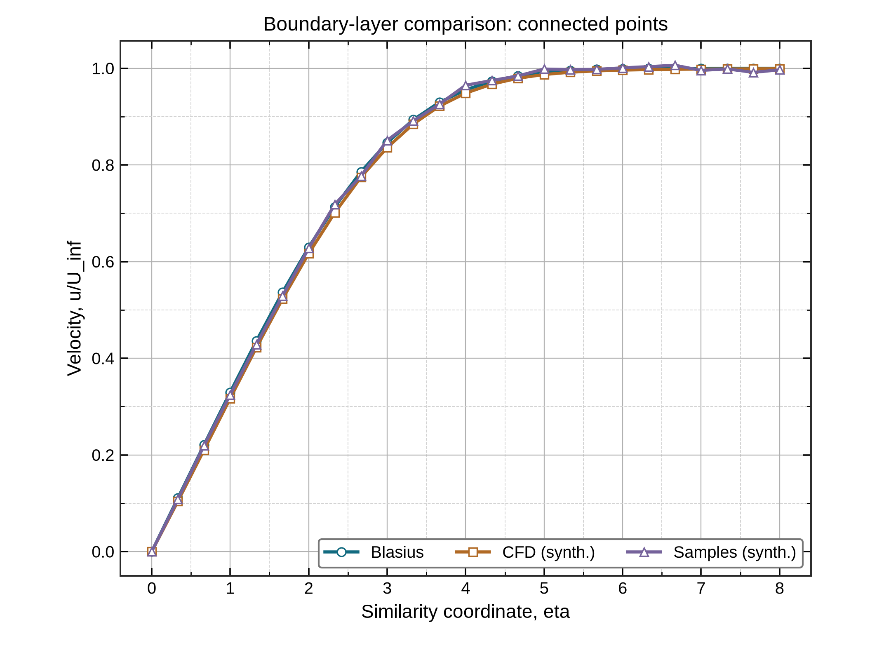
来源：A04 的 Blasius 理论解显式线性插值到 25 个位置 + 合成 CFD 和合成测量点。
含义：边界层速度剖面的三组点线比较；插值仅用于构造理论采样，不修改 DNS。
参数：eta=0–8，共 25 点；数值偏差 -0.025*eta*exp(-eta/1.5)；合成测量噪声标准差上限 0.005。
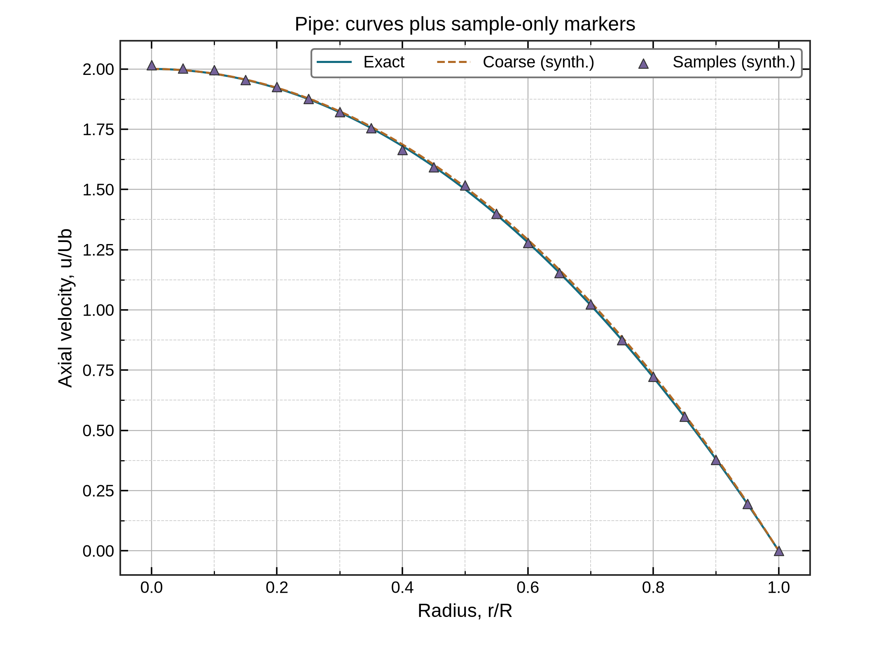
来源：同 A03/B04；测量点仍为合成数据。
含义：理论线 + 数值线 + 不连线的合成测量点。
参数：Python API 返回 Axes 后叠加 scatter；不是原生 point-line 模式；复用母板配色、图例和布局检查。
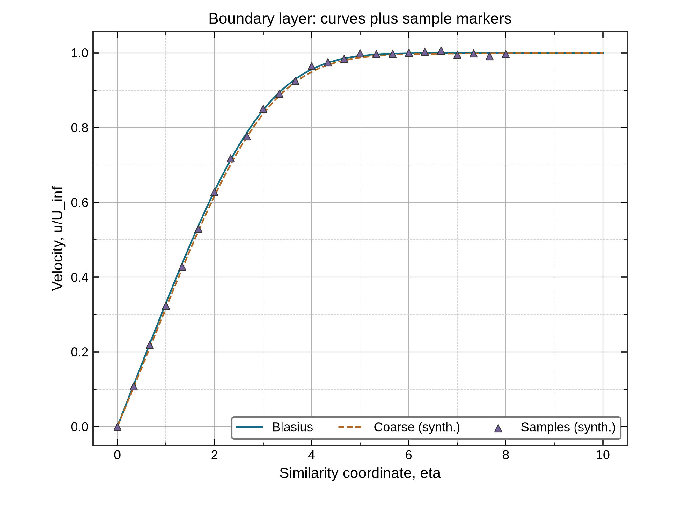
来源：同 A04/B05；测量点仍为合成数据。
含义：Blasius 理论线 + 数值线 + 不连线的合成测量点。
参数：Python API 返回 Axes 后叠加 scatter；不是原生 point-line 模式；复用母板配色、图例和布局检查。
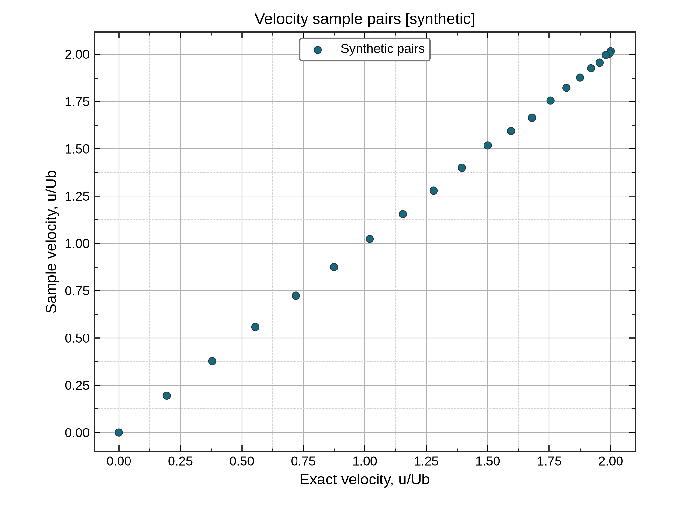
来源：B04 的理论值与合成观测值逐点配对。
含义：最简单的一组散点，无连接线。
参数：21 对数据，无拟合、无回归线。
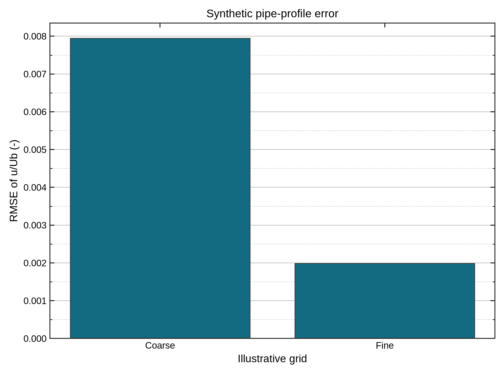
来源：显式从 A03 的合成剖面计算 RMSE；并非真实网格收敛研究。
含义：两个预先计算的误差数值。
参数：RMSE=sqrt(mean((u_synth-u_exact)^2))；201 个 r/R 等距采样点。
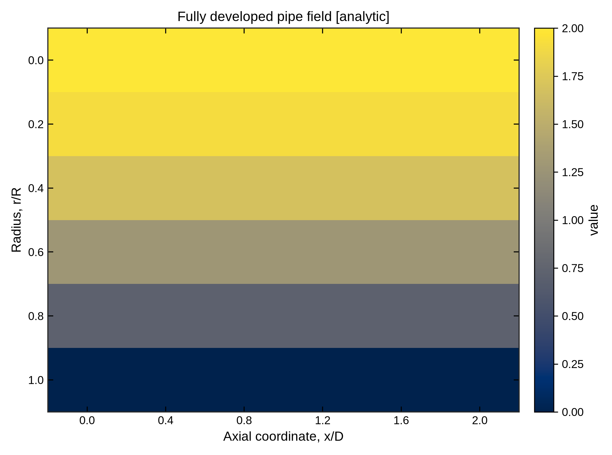
来源：Hagen–Poiseuille 解析速度场，规则网格显式求值。
含义：充分发展时速度沿轴向不变、沿径向抛物分布。
参数：6x6 网格；value=u/Ub=2[1-(r/R)^2]；cividis；原生 imshow 将首行放在图像上方。
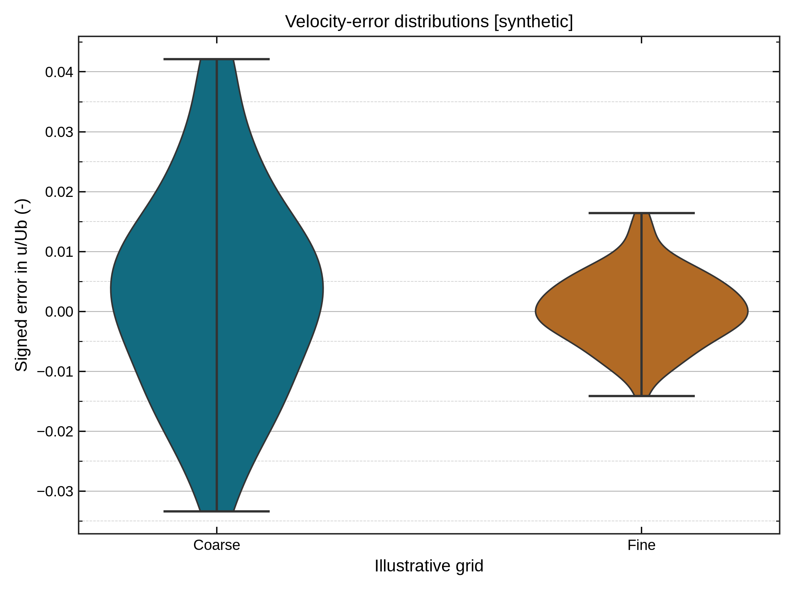
来源：独立构造的高斯误差样本，不是从 DNS 计算的误差，也不是 A03 的误差分布。
含义：两组原始样本的核密度形状。
参数：每组 80 点；均值 0，标准差 0.018/0.006；固定种子；小提琴轮廓是模板内置 KDE。